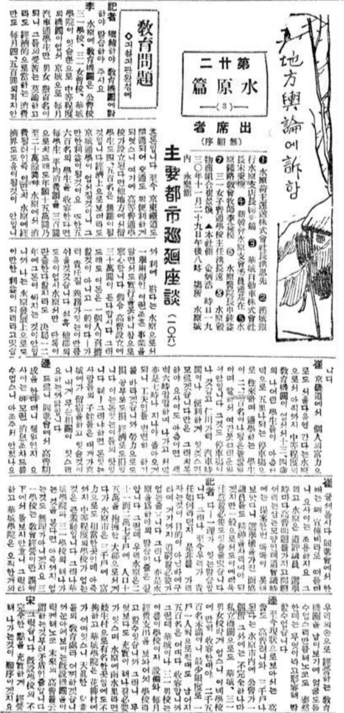
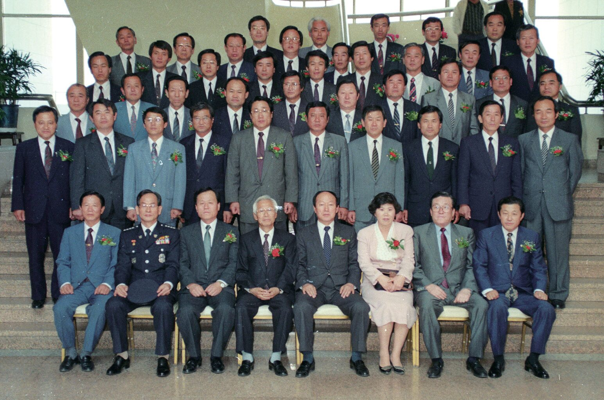

LOG 1929 · 유권자 2.8%자산가의 의회 CODE_002 // 1952 FIRST 1952 LOG 1952 · 20 SEATS첫 시의회
CODE_003 // 1961 VOID
1961
LOG 1961–1991 · NO COUNCIL30년의 공백
CODE_004 // 1991 REVIVAL
1991
LOG 1952 · 20 SEATS첫 시의회
CODE_003 // 1961 VOID
1961
LOG 1961–1991 · NO COUNCIL30년의 공백
CODE_004 // 1991 REVIVAL
1991

LOG 1991 · 46 SEATS지방자치 부활 CODE_005 // WOMEN 1997 LOG 1991– · 여성 의원가장 낮은 곳에서
LOG 1991– · 여성 의원가장 낮은 곳에서
ARCHIVE LOG //
12 FILES
3 ERAS
5 CHAPTERS
SOURCE: 『수원시의원으로 살다』 Ⅱ장 · 19 PAGES
FILE_02 // COLLECTION HIGHLIGHTS
전체 12건 보기 →
소장 자료 하이라이트

“사람은 아버지보다
시대를 닮는다.”
README.TXT // ABOUT
아카이브 소개 →
누가 수원을 대표해 왔는가
수원 의정 아카이브는 황병주·유상희의 연구 「수원시의원들의 사회적 배경」을 바탕으로, 식민지 시기 면협의회부터 1991년 지방자치 부활 이후까지 수원시의원들의 직업·연령·학력·출신을 보여 주는 자료를 모은 디지털 아카이브입니다.
3101929 유권자 수
201952 제1대 정원
30지방자치 공백(년)